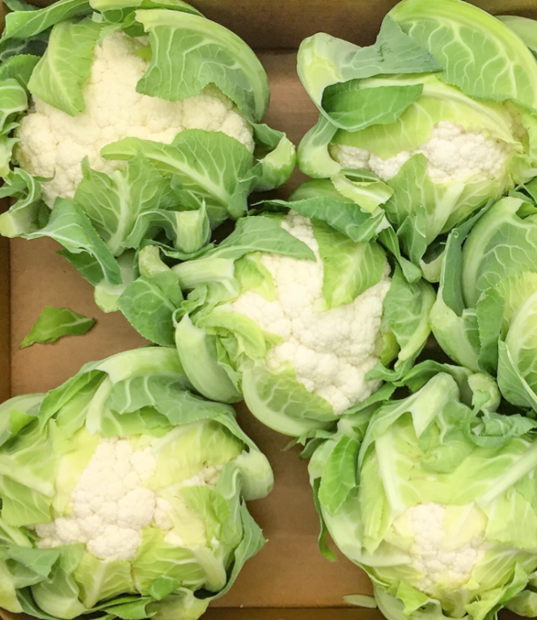

Frutas y verduras del Mediterráneo
Nuestra gama completa, seleccionada uno a uno para el canal profesional: granadas, pimientos, coliflor e higos y brevas.
Nuestra gama
Selección con alma mediterránea
En Frutas Dama de Elche cultivamos y exportamos frutas y verduras frescas con el compromiso de ofrecer siempre productos de máxima calidad. Cada variedad cumple los más altos estándares de sabor, frescura y valor nutricional, gracias a una producción sostenible y orientada al detalle.

Calidad y frescura
Calidad en la que puedes confiar
Nuestras frutas y verduras se cultivan con esmero, siguiendo prácticas sostenibles y un riguroso control de calidad. Desde la semilla hasta la cosecha, aseguramos que cada paso del proceso cumpla nuestros exigentes estándares.
Nuestros estándares de calidad →Certificados que avalan cada envío
Hablemos
¿Montamos tu surtido?
Cuéntanos volumen, formato y mercado. Te respondemos en menos de 24 horas con una propuesta a medida.
Solicitar oferta →